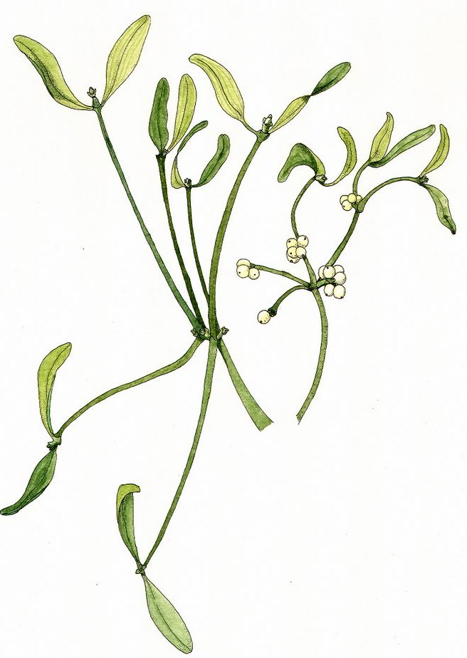

Gylvire
altérant (macération) - 75 po
↪ plante - littoral - été
↪ plante - littoral - été
 La gylvire est une sorte d'algue jaunâtre avec des tiges vertes. La macération qu'on en tire permet de respirer beaucoup plus longtemps sous l'eau. Elle se vend dans des flasques de 50 cl qui équivalent à 5 doses. À noter que le gylvire donne une très mauvaise haleine pour l'heure qui suit.
La gylvire est une sorte d'algue jaunâtre avec des tiges vertes. La macération qu'on en tire permet de respirer beaucoup plus longtemps sous l'eau. Elle se vend dans des flasques de 50 cl qui équivalent à 5 doses. À noter que le gylvire donne une très mauvaise haleine pour l'heure qui suit.
Pour une dose de gylvire avalée, le sujet peut respirer sous l'eau 1 minute de plus que ce que sa constitution lui permet. Pour rappel, une créature peut normalement respirer sous l'eau un nombre de minutes égal à 1 + son modificateur de Constitution. L'organisme sature au bout de 10 doses et la durée de la respiration sous l'eau n'augmente plus passé cela. La gylvire ne fonctionne que sous l'eau et reste sans effet si le sujet ne peut plus respirer pour toute autre raison.

Illustration reproduite avec l'aimable autorisation de Christine Achard
Illustration reproduite avec l'aimable autorisation de Christine Achard
Recueil des plantes d´AideDD